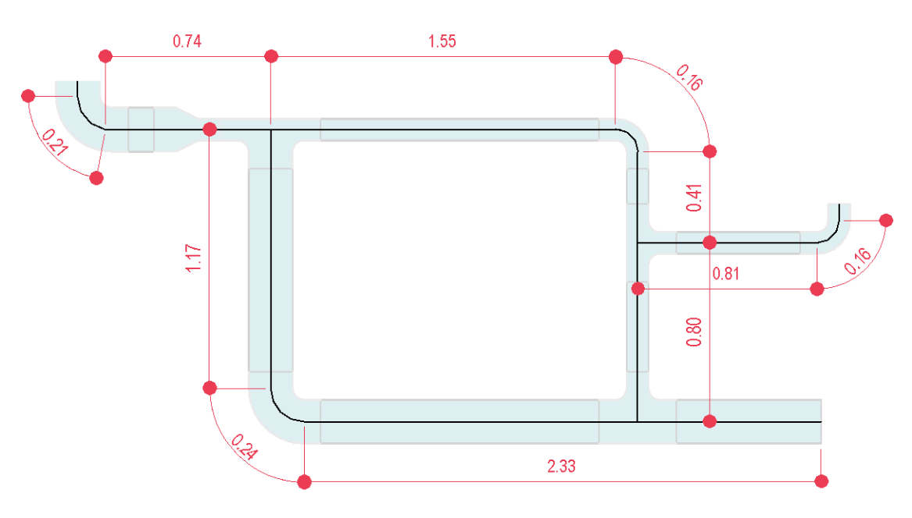

This approach consists of measuring the length of cable containers and adding the length of the fittings in meters, as illustrated in Figure 14.
 Figure 14 - Electrical systems quantity takeoff: Fittings Length Method.
While the authoring software may already provide the cable containers' length, the length of fittings necessitates reporting through a parameter that calculates it based on the precise dimensions of each element.
Recommendation: This method is recommended for preliminary project phases.
Risk: It is crucial to consider the inherent risks associated with this approach, particularly when the design demands fittings with big dimensions or special features, as it may have implications on cost estimation.